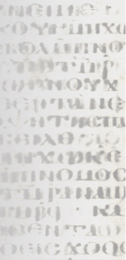
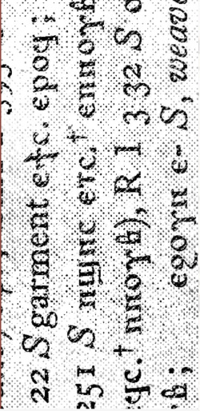
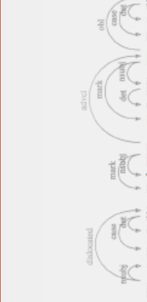
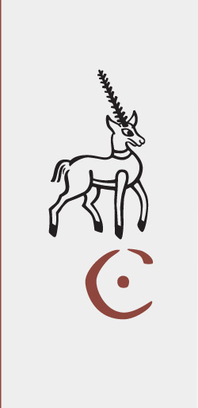

Coptic Scriptorium:
Digital Research in Coptic Language and Literature

Corpora
Read and browse Coptic texts in our corpora, including many with aligned translations.
Browse Corpora

Coptic Dictionary
Lookup a word in an online Coptic Dictionary, developed with our German partners in the KELLIA project.
Use the Dictionary

ANNIS Database
Complete simple searches or complex queries across corpora.
Video Tutorial
Sample Queries

About
Coptic SCRIPTORIUM is a collaborative, digital project led by Caroline T. Schroeder (University of the Pacific) and Amir Zeldes (Georgetown University).
More